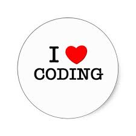

Shameeqka C. Augustin
Scaugustin@yahoo.com
4403 West Atlantic Boulevard # 1012
Coconut Creek,
FL 33066
(954)663-0403
EDUCATION
Bachelor of Business Administration
(August 2007)
Major in Real Estate
Minor in Management Information Systems
Florida Atlantic University, Miami, FL
SKILLS
- Proficient in MS Word, MS Excel, MS Access, and SQL.
- Candidate for Six Sigma Yellow belt certification.
- Team player, attentive to detail, quick learner, hard-working, and reliable.
- Fluent in French and Haitian Creole.
EMPLOYMENT HISTORY
UnitedHealth Group, Miami, FL (January 2012 – Present)
Clinical Administrative Coordinator (January 2017 – Present)
- Receives care coordination notification cases for non-clinical assessment and prioritizes work
queue to
provide
appropriate triage to set up and document cases for clinical coverage review.
- Processes out-of-network requests for consideration of in-network level of benefits for physician
specialty
referrals for appropriate products.
- Communicates to providers and members coverage determinations within compliance and resolves
customer
service
issues while providing excellent customer service to providers and enrollees.
- Constantly meets established productivity, schedule adherence, and quality standards while
maintaining good
attendance.
- Other duties as assigned by supervisor and/or manager.
Senior Claims Representative (January 2014 – February 2016)
- Worked closely as a subject matter expert with claim processors and supervisor to improve individual
and
team
quality, skills set, and efficiency through coaching and training efforts.
- Identified issue trends affecting multiple claims areas and escalated to appropriate business
partners.
- Participated in process development groups as requested by management.
- Communicated pertinent information to claims processing team in a timely fashion.
Phone Provider Representative (January 2012 – January 2014)
- Courteously assisted providers with benefit and claim inquiries.
- Gladly supported with different plans and platforms as needs change.
- Continuously checked for procedure updates to ensure the integrity of processes.
- Assisted team with escalated calls and provider callbacks
Nova Southeastern University, Fort Lauderdale, FL (August 2004 – January 2006)
Clerical Assistant III (July 2005 – January 2006)
- Assisted students with registration for continuing dissertation services.
- Performed office and clerical duties, such as maintaining records, writing and mailing
correspondence,
answering
and routing phone calls.
Admissions Secretary (August 2004 – July 2005)
- Performed office & clerical functions, which include composing, typing, editing and distributing
correspondence,
scheduling appointments, routing inquiries and correspondence, maintaining records.
- Set up applicant files. Recorded new application information in the database. Maintained computer
database
of
applicants and their status.
- Assisted with the preparations for Open House, Orientation and other special events.
